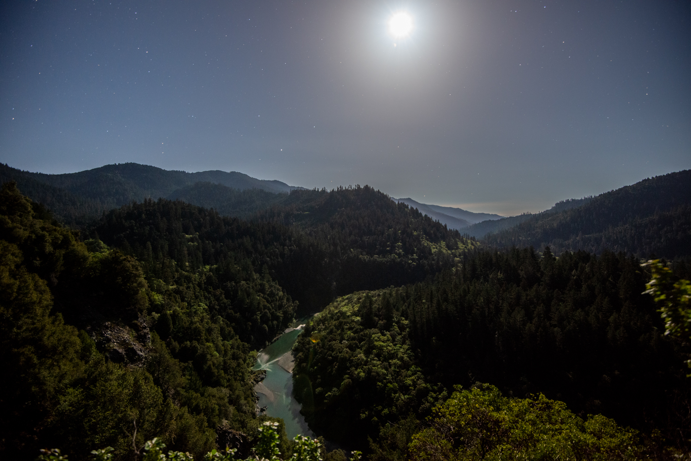

Information
Photograph Information
| Photo | Title | Location | Camera Settings |
|---|---|---|---|
 |
Trinity River | Willow Creek, CA | 1/1600 sec @ f/8.0, ISO 320 |
 |
Wildfire | Knob Fire, Willow Creek, CA | 1/1600 sec @ f/8.0, ISO 320 |
 |
Wedding Rock | Patrick's Point State Park | 1/80 sec @ f/8.0, ISO 100 |
 |
Half Dome | Yosemite National Park | 1/80 sec @ f/8.0, ISO 100 |
| Trinidad Sunset | Trinidad, CA | 1/80 sec @ f/8.0, ISO 100 | |
 |
Squirrel | Six Rivers National Forest | 1/500 sec @ f/3.2, ISO 400 |
| Hawk | Six Rivers National Forest | 1/640sec @ f/7.1, ISO 400 | |
| Flying Eagle | Trinity River | 1/2000 sec @ f/5.6, ISO 6400 | |
 |
Bear | Six Rivers National Forest | 1/800 sec @ f/5.6, ISO 10000 |
 |
Galaxy | Earth | 10.09 sec @ f/1.8, ISO 25600 |
| Moon | Earth | 1/640 sec @ f/8.0, ISO 2000 | |
|  | South Fork Trinity River | Six Rivers National Forest | 25.0 sec @ f/4.0, ISO 2500 |
 |
Starstreaks | Six Rivers National Forest | 2712.0 sec @ f/11, ISO 64 |
 |
Mt.Shasta | Shasta, CA | 20.0 sec @ f/4.0, ISO 6400 |
| All photos taken with Nikon cameras and lenses. | |||